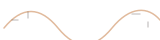

WordPress
佈景主題、外掛、效能、資安與長期維運——從需求分析到上線部署把關。
自我介紹
賴俊吾／Oberon Lai
WordPress + AI 技術合夥人。11 年 WP 實戰，透過 Codotx（想點創意）陪你把想法穩穩交付上線。
我專注把複雜的客製需求拆成能交付的解法——從 WordPress、WooCommerce、LINE 整合，到把 AI 真正嵌進開發流程與產品。這裡是我的日常、作品與教學；若你需要長期技術夥伴，也可以透過 Codotx 找我（與團隊）。

信任點
先理解商業與流程，再寫程式；從需求釐清到上線維運都能陪。
主題、外掛、電商、金流、效能、資安——能進核心源碼解問題。
我會設計 AI 開發框架、幫團隊把 AI 寫得對，也補上 AI 看不見的盲點。
Ongoing
Services
從 WordPress、WooCommerce 到 LINE 整合——以超過十年的實戰經驗，協助你把想法穩穩交付上線。我習慣當技術合夥人：先把問題拆清楚，再一起做到能維護、能成長的版本。
佈景主題、外掛、效能、資安與長期維運——從需求分析到上線部署把關。
台灣主流金流、結帳客製、訂單自動化——打造高效能電商營運系統。
Login、Messaging API、官方帳號機器人與 CRM——把訂單變成可經營的關係。
盤點 AI 開發流程、設計框架，並把 AI 客服／自動化嵌進 WP 與 LINE。
協助盤點 AI 開發流程、設計框架，並補上安全與維運盲點；也可把 AI 客服／自動化嵌進 WordPress 與 LINE。完整顧問矩陣請看 Codotx 服務項目。
Teaching & Talks